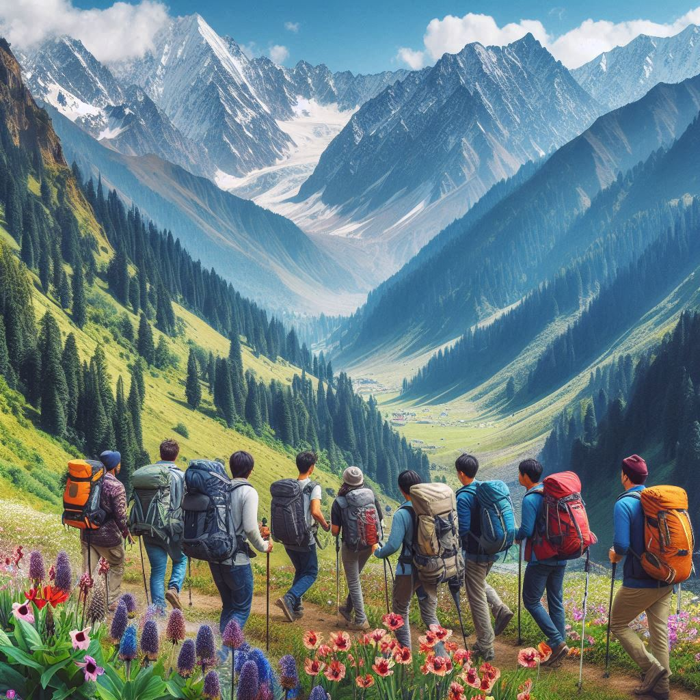
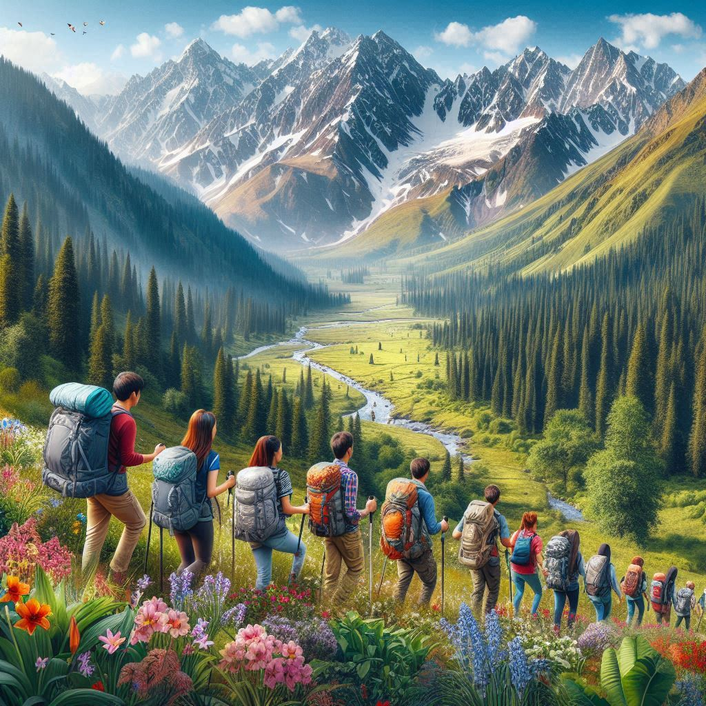

Jammu and Kashmir, often referred to as "Paradise on Earth," is one of India's most captivating travel
destinations. Its breathtaking landscapes, rich culture, historical significance, and diverse activities
make it a popular destination for both domestic and international tourists. Here is an overview of tourism
in the region:
1. Natural Beauty and Scenic Spots
- Kashmir Valley: Famous for lush meadows, snow-clad peaks, and serene lakes.
Attractions include Srinagar, Gulmarg, Pahalgam, and Sonamarg.
- Lakes: Dal Lake, Nigeen Lake, and Wular Lake are famous for houseboat stays,
shikara rides, and nature experiences.
- Ladakh: Known for high-altitude deserts, monasteries, and adventure tourism.
Popular spots include Leh, Pangong Lake, Nubra Valley, and Magnetic Hill.
2. Adventure Tourism
- Trekking: Trails like the Great Lakes Trek and those in Zanskar are popular.
- Skiing and Snowboarding: Gulmarg is a major skiing destination.
- White Water Rafting: Rivers like the Lidder and Zanskar are ideal for rafting.
- Mountaineering: Challenging peaks attract global climbers.
- Paragliding and Camping: Adventure activities and camping are widespread throughout
the region.
3. Religious and Pilgrimage Tourism
- Amarnath Yatra: A significant pilgrimage to the Amarnath Cave, dedicated to
Lord Shiva.
- Vaishno Devi Temple: A revered shrine in Katra, drawing millions of pilgrims.
- Buddhist Monasteries in Ladakh: Monasteries like Hemis, Thiksey, Diskit, and
Shey offer spiritual experiences.
4. Historical and Heritage Sites
- Mughal Gardens: Famous gardens like Shalimar Bagh, Nishat Bagh, and Chashme
Shahi in Srinagar.
- Old City of Srinagar: Home to sites like Jamia Masjid, Shankaracharya Temple,
and Hari Parbat Fort.
- Ancient Forts and Palaces: Mubarak Mandi Palace in Jammu and Leh Palace in
Ladakh showcase regional history.


5. Cuisine and Handicrafts
- Cuisine: Kashmiri Wazwan, Rogan Josh, Yakhni, Ladakhi Thukpa, and Momos are
must-try dishes.
- Handicrafts: Pashmina shawls, Kashmiri carpets, papier-mâché items, and
wooden crafts are famous throughout the region.
6. Festivals and Cultural Tourism
- Festivals: Navroz, Eid, Lohri, Hemis Festival, and the Tulip Festival in
Kashmir are celebrated with enthusiasm.
- Traditional Music and Dance: Folk music and dance are a part of the
region's cultural tourism.
7. Eco-Tourism
- Promoting eco-friendly tourism through nature camps, wildlife tours, and sustainable travel
initiatives.
8. Wildlife Tourism
- National Parks and Sanctuaries: Hemis National Park and Dachigam
National Park are major wildlife destinations.
Jammu and Kashmir’s blend of natural splendor, cultural richness, adventure, and
spirituality makes it a destination like no other, drawing tourists year-round.